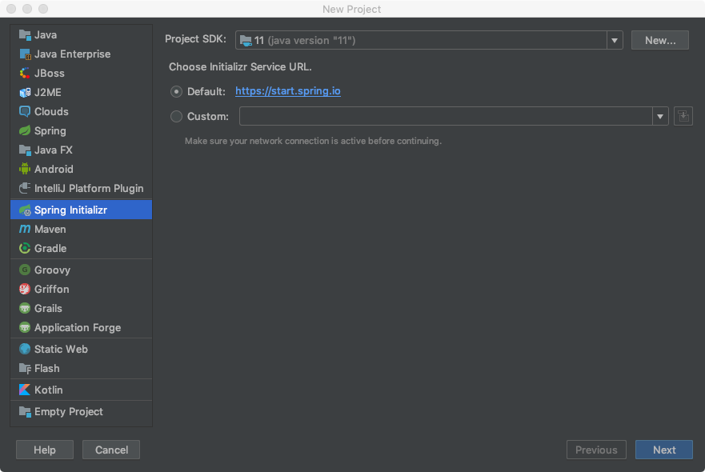
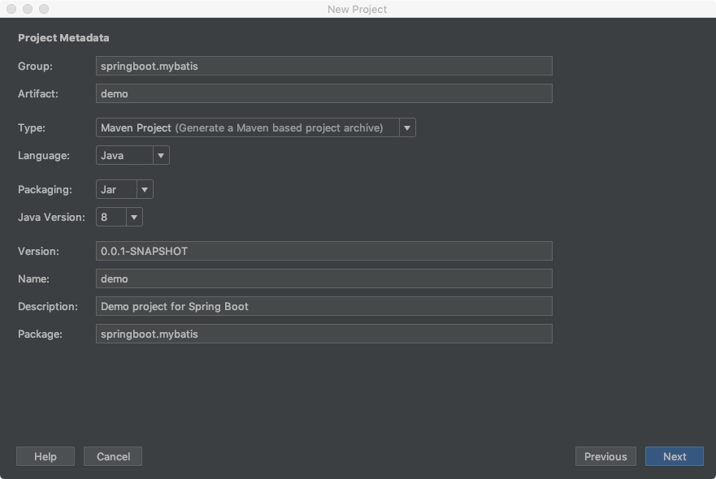
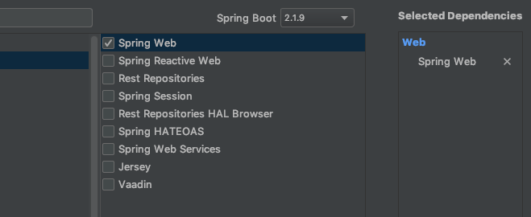
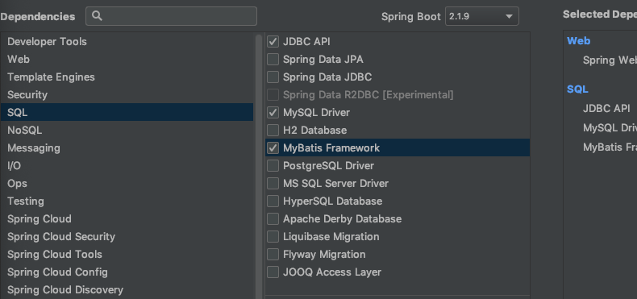
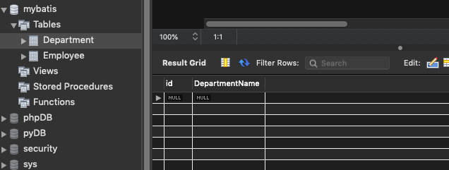
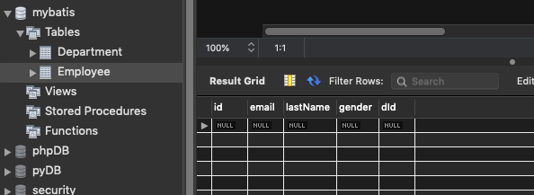
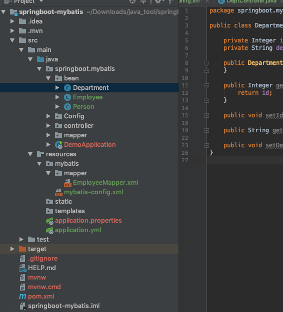
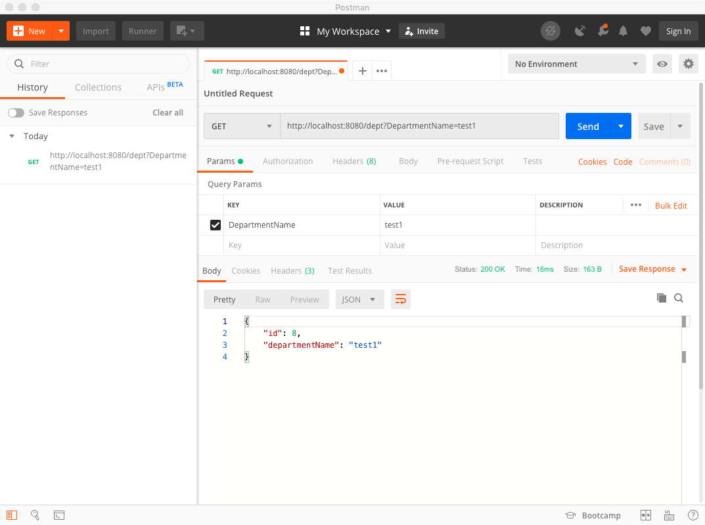
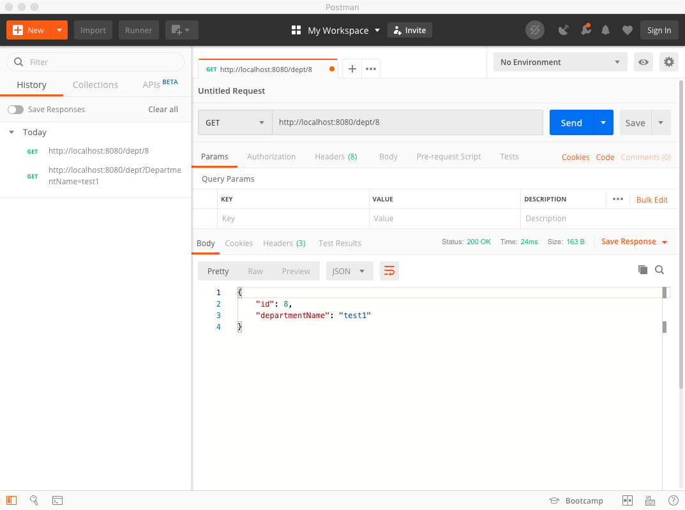

<!DOCTYPE html>
<html>
<head><meta name="generator" content="Hexo 3.8.0">
  <meta charset="utf-8">
  

  
  <title>springboot整合mybatis | Welcome to Wutong&#39;s Blog</title>
  <meta name="viewport" content="width=device-width, initial-scale=1, maximum-scale=1">
  <meta name="description" content="1使用IDEA Spring lnitializr创建一个springboot项目">
<meta name="keywords" content="springboot mybatis">
<meta property="og:type" content="article">
<meta property="og:title" content="springboot整合mybatis">
<meta property="og:url" content="http://wutongsun.github.io/2019/10/12/springboot整合mybatis/index.html">
<meta property="og:site_name" content="Welcome to Wutong&#39;s Blog">
<meta property="og:description" content="1使用IDEA Spring lnitializr创建一个springboot项目">
<meta property="og:locale" content="default">
<meta property="og:image" content="http://wutongsun.github.io/2019/10/12/springboot整合mybatis/1.png">
<meta property="og:image" content="http://wutongsun.github.io/2019/10/12/springboot整合mybatis/2.png">
<meta property="og:image" content="http://wutongsun.github.io/2019/10/12/springboot整合mybatis/3.png">
<meta property="og:image" content="http://wutongsun.github.io/2019/10/12/springboot整合mybatis/4.png">
<meta property="og:image" content="http://wutongsun.github.io/2019/10/12/springboot整合mybatis/5.png">
<meta property="og:image" content="http://wutongsun.github.io/2019/10/12/springboot整合mybatis/6.png">
<meta property="og:image" content="http://wutongsun.github.io/2019/10/12/springboot整合mybatis/7.png">
<meta property="og:image" content="http://wutongsun.github.io/2019/10/12/springboot整合mybatis/8.png">
<meta property="og:image" content="http://wutongsun.github.io/2019/10/12/springboot整合mybatis/9.png">
<meta property="og:updated_time" content="2019-10-17T16:21:13.076Z">
<meta name="twitter:card" content="summary">
<meta name="twitter:title" content="springboot整合mybatis">
<meta name="twitter:description" content="1使用IDEA Spring lnitializr创建一个springboot项目">
<meta name="twitter:image" content="http://wutongsun.github.io/2019/10/12/springboot整合mybatis/1.png">
  
    <link rel="alternate" href="/atom.xml" title="Welcome to Wutong&#39;s Blog" type="application/atom+xml">
  
  
    <link rel="icon" href="/favicon.png">
  
  
    <link href="//fonts.googleapis.com/css?family=Source+Code+Pro" rel="stylesheet" type="text/css">
  
  <link rel="stylesheet" href="/css/style.css">
</head>
</html>
<body>
  <div id="container">
    <div id="wrap">
      <header id="header">
  <div id="banner"></div>
  <div id="header-outer" class="outer">
    <div id="header-title" class="inner">
      <h1 id="logo-wrap">
        <a href="/" id="logo">Welcome to Wutong&#39;s Blog</a>
      </h1>
      
        <h2 id="subtitle-wrap">
          <a href="/" id="subtitle">Stay Hungry! Stay Foolish!</a>
        </h2>
      
    </div>
    <div id="header-inner" class="inner">
      <nav id="main-nav">
        <a id="main-nav-toggle" class="nav-icon"></a>
        
          <a class="main-nav-link" href="/">Home</a>
        
          <a class="main-nav-link" href="/archives">Archives</a>
        
      </nav>
      <nav id="sub-nav">
        
          <a id="nav-rss-link" class="nav-icon" href="/atom.xml" title="RSS Feed"></a>
        
        <a id="nav-search-btn" class="nav-icon" title="Search"></a>
      </nav>
      <div id="search-form-wrap">
        <form action="//google.com/search" method="get" accept-charset="UTF-8" class="search-form"><input type="search" name="q" class="search-form-input" placeholder="Search"><button type="submit" class="search-form-submit">&#xF002;</button><input type="hidden" name="sitesearch" value="http://wutongsun.github.io"></form>
      </div>
    </div>
  </div>
</header>
      <div class="outer">
        <section id="main"><article id="post-springboot整合mybatis" class="article article-type-post" itemscope itemprop="blogPost">
  <div class="article-meta">
    <a href="/2019/10/12/springboot整合mybatis/" class="article-date">
  <time datetime="2019-10-12T06:58:23.000Z" itemprop="datePublished">2019-10-12</time>
</a>
    
  <div class="article-category">
    <a class="article-category-link" href="/categories/Java/">Java</a>
  </div>

  </div>
  <div class="article-inner">
    
    
      <header class="article-header">
        
  
    <h1 class="article-title" itemprop="name">
      springboot整合mybatis
    </h1>
  

      </header>
    
    <div class="article-entry" itemprop="articleBody">
      
        <h4 id="1使用IDEA-Spring-lnitializr创建一个springboot项目"><a href="#1使用IDEA-Spring-lnitializr创建一个springboot项目" class="headerlink" title="1使用IDEA Spring lnitializr创建一个springboot项目"></a>1使用IDEA Spring lnitializr创建一个springboot项目</h4><a id="more"></a>
<p></p>
<p></p>
<h4 id="2-勾选添加相应的依赖"><a href="#2-勾选添加相应的依赖" class="headerlink" title="2 勾选添加相应的依赖"></a>2 勾选添加相应的依赖</h4><p></p>
<p></p>
<h4 id="3-在数据库中创建数据库mybatis，以及两张表Department，Employee"><a href="#3-在数据库中创建数据库mybatis，以及两张表Department，Employee" class="headerlink" title="3 在数据库中创建数据库mybatis，以及两张表Department，Employee"></a>3 在数据库中创建数据库mybatis，以及两张表Department，Employee</h4><p></p>
<p></p>
<h4 id="4-在src-main-java-springboot-mybatis目录下，分别创建对应的JavaBean"><a href="#4-在src-main-java-springboot-mybatis目录下，分别创建对应的JavaBean" class="headerlink" title="4 在src/main/java/springboot/mybatis目录下，分别创建对应的JavaBean"></a>4 在src/main/java/springboot/mybatis目录下，分别创建对应的JavaBean</h4><p></p>
<h4 id="5-编写应用配置文件application-yml"><a href="#5-编写应用配置文件application-yml" class="headerlink" title="5 编写应用配置文件application.yml"></a>5 编写应用配置文件application.yml</h4><p><code></code></p>
<figure class="highlight yml"><table><tr><td class="gutter"><pre><span class="line">1</span><br><span class="line">2</span><br><span class="line">3</span><br><span class="line">4</span><br><span class="line">5</span><br><span class="line">6</span><br><span class="line">7</span><br><span class="line">8</span><br><span class="line">9</span><br><span class="line">10</span><br><span class="line">11</span><br><span class="line">12</span><br><span class="line">13</span><br><span class="line">14</span><br><span class="line">15</span><br><span class="line">16</span><br><span class="line">17</span><br><span class="line">18</span><br><span class="line">19</span><br><span class="line">20</span><br><span class="line">21</span><br><span class="line">22</span><br><span class="line">23</span><br><span class="line">24</span><br><span class="line">25</span><br><span class="line">26</span><br><span class="line">27</span><br><span class="line">28</span><br></pre></td><td class="code"><pre><span class="line"><span class="attr">spring:</span></span><br><span class="line"><span class="attr">  datasource:</span></span><br><span class="line"><span class="attr">    username:</span> <span class="string">root</span></span><br><span class="line"><span class="attr">    password:</span> <span class="number">123456</span></span><br><span class="line"><span class="attr">    url:</span> <span class="attr">jdbc:mysql://127.0.0.1:3306/mybatis</span></span><br><span class="line"><span class="attr">    driver-class-name:</span> <span class="string">com.mysql.cj.jdbc.Driver</span></span><br><span class="line"><span class="attr">    type:</span> <span class="string">com.alibaba.druid.pool.DruidDataSource</span></span><br><span class="line"></span><br><span class="line"><span class="attr">    initialSize:</span> <span class="number">5</span></span><br><span class="line"><span class="attr">    minIdle:</span> <span class="number">5</span></span><br><span class="line"><span class="attr">    maxActive:</span> <span class="number">20</span></span><br><span class="line"><span class="attr">    maxWait:</span> <span class="number">60000</span></span><br><span class="line"><span class="attr">    timeBetweenEvictionRunsMillis:</span> <span class="number">60000</span></span><br><span class="line"><span class="attr">    minEvictableIdleTimeMillis:</span> <span class="number">30000</span></span><br><span class="line"><span class="attr">    validationQuery:</span> <span class="string">SELECT</span> <span class="number">1</span> <span class="string">FROM</span> <span class="string">DUAL</span></span><br><span class="line"><span class="attr">    testWhileIdle:</span> <span class="literal">true</span></span><br><span class="line"><span class="attr">    testOnBorrow:</span> <span class="literal">false</span></span><br><span class="line"><span class="attr">    testOnReturn:</span> <span class="literal">false</span></span><br><span class="line"><span class="attr">    poolPreparedStatements:</span> <span class="literal">true</span></span><br><span class="line"></span><br><span class="line"><span class="comment">#    filters: stat,wall,log4j</span></span><br><span class="line"><span class="attr">    filters:</span> <span class="string">stat,wall</span></span><br><span class="line"><span class="attr">    maxPoolPrepareStatementPerConnectionSize:</span> <span class="number">20</span></span><br><span class="line"><span class="attr">    useGlobalDataSourceStat:</span> <span class="literal">true</span></span><br><span class="line"><span class="attr">    connectionProperties:</span> <span class="string">druid.stat.mergeSql=true;druid.stat.slowSqlMillis=500</span></span><br><span class="line"><span class="attr">mybatis:</span></span><br><span class="line"><span class="attr">  config-location:</span> <span class="attr">classpath:mybatis/mybatis-config.xml</span></span><br><span class="line"><span class="attr">  mapper-locations:</span> <span class="attr">classpath:mybatis/mapper/EmployeeMapper.xml</span></span><br></pre></td></tr></table></figure>
<h4 id="6-mybatis-映射文件配置"><a href="#6-mybatis-映射文件配置" class="headerlink" title="6 mybatis 映射文件配置"></a>6 mybatis 映射文件配置</h4><p>1 使用注解</p>
<p>在springboot/mybatis目录下新建mapper/DepartmentMapper.java类</p>
<p><code></code></p>
<figure class="highlight java"><table><tr><td class="gutter"><pre><span class="line">1</span><br><span class="line">2</span><br><span class="line">3</span><br><span class="line">4</span><br><span class="line">5</span><br><span class="line">6</span><br><span class="line">7</span><br><span class="line">8</span><br><span class="line">9</span><br><span class="line">10</span><br><span class="line">11</span><br><span class="line">12</span><br><span class="line">13</span><br><span class="line">14</span><br><span class="line">15</span><br><span class="line">16</span><br></pre></td><td class="code"><pre><span class="line"><span class="meta">@Mapper</span></span><br><span class="line"><span class="keyword">public</span> <span class="class"><span class="keyword">interface</span> <span class="title">DepartmentMapper</span> </span>&#123;</span><br><span class="line"></span><br><span class="line"> <span class="meta">@Select</span>(<span class="string">"select * from department where id=#&#123;id&#125;"</span>)</span><br><span class="line"> <span class="function"><span class="keyword">public</span> Department <span class="title">getDeptById</span><span class="params">(Integer id)</span></span>;</span><br><span class="line"></span><br><span class="line"> <span class="meta">@Delete</span>(<span class="string">"delete from department where id=#&#123;id&#125;"</span>)</span><br><span class="line"> <span class="function"><span class="keyword">public</span> <span class="keyword">int</span> <span class="title">deleteDeptById</span><span class="params">(Integer id)</span></span>;</span><br><span class="line"></span><br><span class="line"> <span class="meta">@Options</span>(useGeneratedKeys = <span class="keyword">true</span>, keyProperty = <span class="string">"id"</span>)</span><br><span class="line"> <span class="meta">@Insert</span>(<span class="string">"insert into department(departmentName) values(#&#123;departmentName&#125;)"</span>)</span><br><span class="line"> <span class="function"><span class="keyword">public</span> <span class="keyword">int</span> <span class="title">insertDept</span><span class="params">(Department department)</span></span>;</span><br><span class="line"></span><br><span class="line"> <span class="meta">@Update</span>(<span class="string">"update dapartment set  departmentName=#&#123;departmentName&#125; where id=#&#123;id&#125;"</span>)</span><br><span class="line"> <span class="function"><span class="keyword">public</span> <span class="keyword">int</span> <span class="title">updateDept</span><span class="params">(Department department)</span></span>;</span><br><span class="line"> &#125;</span><br></pre></td></tr></table></figure>
<p>2 使用xml文件配置</p>
<p>在resources目录下新建mybatis/mapper/EmployeeMapper.xml映射文件</p>
<p><code></code></p>
<figure class="highlight xml"><table><tr><td class="gutter"><pre><span class="line">1</span><br><span class="line">2</span><br><span class="line">3</span><br><span class="line">4</span><br><span class="line">5</span><br><span class="line">6</span><br><span class="line">7</span><br><span class="line">8</span><br><span class="line">9</span><br><span class="line">10</span><br><span class="line">11</span><br><span class="line">12</span><br></pre></td><td class="code"><pre><span class="line"><span class="meta">&lt;?xml version="1.0" encoding="UTF-8" ?&gt;</span></span><br><span class="line"><span class="meta">&lt;!DOCTYPE mapper</span></span><br><span class="line"><span class="meta">     PUBLIC "-//mybatis.org//DTD Mapper 3.0//EN"</span></span><br><span class="line"><span class="meta">     "http://mybatis.org/dtd/mybatis-3-mapper.dtd"&gt;</span></span><br><span class="line"><span class="tag">&lt;<span class="name">mapper</span> <span class="attr">namespace</span>=<span class="string">"springboot.mybatis.mapper.EmployeeMapper"</span>&gt;</span></span><br><span class="line"> <span class="tag">&lt;<span class="name">select</span> <span class="attr">id</span>=<span class="string">"getEmpById"</span> <span class="attr">resultType</span>=<span class="string">"springboot.mybatis.bean.Employee"</span>&gt;</span></span><br><span class="line"> select * from employee where id = #&#123;id&#125;</span><br><span class="line"><span class="tag">&lt;/<span class="name">select</span>&gt;</span></span><br><span class="line"> <span class="tag">&lt;<span class="name">insert</span> <span class="attr">id</span>=<span class="string">"insertEmp"</span>&gt;</span></span><br><span class="line">     INSERT INTO employee(lastName,email,gender,dId) VALUES (#&#123;lastName&#125;,#&#123;email&#125;,#&#123;gender&#125;,#&#123;dId&#125;)</span><br><span class="line"> <span class="tag">&lt;/<span class="name">insert</span>&gt;</span></span><br><span class="line"><span class="tag">&lt;/<span class="name">mapper</span>&gt;</span></span><br></pre></td></tr></table></figure>
<p>在resources目录下新建mybatis核心配置文件mybatis/mybatis-config.xml</p>
<p><code></code></p>
<figure class="highlight xml"><table><tr><td class="gutter"><pre><span class="line">1</span><br><span class="line">2</span><br><span class="line">3</span><br><span class="line">4</span><br><span class="line">5</span><br><span class="line">6</span><br></pre></td><td class="code"><pre><span class="line"><span class="meta">&lt;?xml version="1.0" encoding="UTF-8" ?&gt;</span></span><br><span class="line"><span class="meta">&lt;!DOCTYPE configuration</span></span><br><span class="line"><span class="meta">        PUBLIC "-//mybatis.org//DTD Config 3.0//EN"</span></span><br><span class="line"><span class="meta">        "http://mybatis.org/dtd/mybatis-3-config.dtd"&gt;</span></span><br><span class="line"><span class="tag">&lt;<span class="name">configuration</span>&gt;</span></span><br><span class="line"><span class="tag">&lt;/<span class="name">configuration</span>&gt;</span></span><br></pre></td></tr></table></figure>
<p>3 在application.yml中添加mybatis配置</p>
<p><code></code></p>
<figure class="highlight yaml"><table><tr><td class="gutter"><pre><span class="line">1</span><br><span class="line">2</span><br><span class="line">3</span><br></pre></td><td class="code"><pre><span class="line"><span class="attr">mybatis:</span></span><br><span class="line"><span class="attr">config-location:</span> <span class="attr">classpath:mybatis/mybatis-config.xml</span></span><br><span class="line"><span class="attr">mapper-locations:</span> <span class="attr">classpath:mybatis/mapper/EmployeeMapper.xml</span></span><br></pre></td></tr></table></figure>
<h4 id="7-编写测试文件controller-DeptController-java"><a href="#7-编写测试文件controller-DeptController-java" class="headerlink" title="7 编写测试文件controller/DeptController.java"></a>7 编写测试文件controller/DeptController.java</h4><p><code></code></p>
<figure class="highlight java"><table><tr><td class="gutter"><pre><span class="line">1</span><br><span class="line">2</span><br><span class="line">3</span><br><span class="line">4</span><br><span class="line">5</span><br><span class="line">6</span><br><span class="line">7</span><br><span class="line">8</span><br><span class="line">9</span><br><span class="line">10</span><br><span class="line">11</span><br><span class="line">12</span><br><span class="line">13</span><br><span class="line">14</span><br><span class="line">15</span><br><span class="line">16</span><br><span class="line">17</span><br><span class="line">18</span><br><span class="line">19</span><br><span class="line">20</span><br><span class="line">21</span><br></pre></td><td class="code"><pre><span class="line"><span class="meta">@RestController</span></span><br><span class="line"><span class="keyword">public</span> <span class="class"><span class="keyword">class</span> <span class="title">DeptController</span> </span>&#123;</span><br><span class="line">    <span class="meta">@Autowired</span></span><br><span class="line">    DepartmentMapper departmentMapper;</span><br><span class="line">    <span class="meta">@Autowired</span></span><br><span class="line">    EmployeeMapper employeeMapper;</span><br><span class="line">    <span class="comment">//PathVariable获取路径变量</span></span><br><span class="line">    <span class="meta">@GetMapping</span>(<span class="string">"/emp/&#123;id&#125;"</span>)</span><br><span class="line">    <span class="function"><span class="keyword">public</span> Employee <span class="title">getEmp</span><span class="params">(@PathVariable(<span class="string">"id"</span>)</span> Integer id) </span>&#123;</span><br><span class="line">        <span class="keyword">return</span> employeeMapper.getEmpById(id);</span><br><span class="line">    &#125;</span><br><span class="line">    <span class="meta">@GetMapping</span>(<span class="string">"/dept/&#123;id&#125;"</span>)</span><br><span class="line">    <span class="function"><span class="keyword">public</span> Department <span class="title">getDepartment</span><span class="params">(@PathVariable(<span class="string">"id"</span>)</span> Integer id) </span>&#123;</span><br><span class="line">        <span class="keyword">return</span> departmentMapper.getDeptById(id);</span><br><span class="line">    &#125;</span><br><span class="line">    <span class="meta">@GetMapping</span>(<span class="string">"/dept"</span>)</span><br><span class="line">    <span class="function"><span class="keyword">public</span> Department <span class="title">insertDept</span><span class="params">(Department department)</span> </span>&#123;</span><br><span class="line">        departmentMapper.insertDept(department);</span><br><span class="line">        <span class="keyword">return</span> department;</span><br><span class="line">    &#125;</span><br><span class="line">&#125;</span><br></pre></td></tr></table></figure>
<h4 id="8-启动springboot测试"><a href="#8-启动springboot测试" class="headerlink" title="8 启动springboot测试"></a>8 启动springboot测试</h4><p>1&gt; 添加</p>
<p></p>
<p>2&gt; 查询</p>
<p></p>

      
    </div>
    <footer class="article-footer">
      <a data-url="http://wutongsun.github.io/2019/10/12/springboot整合mybatis/" data-id="ck2g6spqn0024s6pj0oxybx1q" class="article-share-link">Share</a>
      
      
  <ul class="article-tag-list"><li class="article-tag-list-item"><a class="article-tag-list-link" href="/tags/springboot-mybatis/">springboot mybatis</a></li></ul>

	 <div class="bdsharebuttonbox"><a href="#" class="bds_more" data-cmd="more"></a><a href="#" class="bds_qzone" data-cmd="qzone" title="分享到QQ空间"></a><a href="#" class="bds_tsina" data-cmd="tsina" title="分享到新浪微博"></a><a href="#" class="bds_tqq" data-cmd="tqq" title="分享到腾讯微博"></a><a href="#" class="bds_renren" data-cmd="renren" title="分享到人人网"></a><a href="#" class="bds_weixin" data-cmd="weixin" title="分享到微信"></a></div>
<script>window._bd_share_config={"common":{"bdSnsKey":{},"bdText":"","bdMini":"2","bdMiniList":false,"bdPic":"","bdStyle":"0","bdSize":"16"},"share":{},"image":{"viewList":["qzone","tsina","tqq","renren","weixin"],"viewText":"分享到：","viewSize":"16"}};with(document)0[(getElementsByTagName('head')[0]||body).appendChild(createElement('script')).src='http://bdimg.share.baidu.com/static/api/js/share.js?v=89860593.js?cdnversion='+~(-new Date()/36e5)];</script>
   
    </footer>
  </div>
  
    
<nav id="article-nav">
  
    <a href="/2019/10/13/redis/" id="article-nav-newer" class="article-nav-link-wrap">
      <strong class="article-nav-caption">Newer</strong>
      <div class="article-nav-title">
        
          redis
        
      </div>
    </a>
  
  
    <a href="/2019/10/11/springboot添加Druid监控/" id="article-nav-older" class="article-nav-link-wrap">
      <strong class="article-nav-caption">Older</strong>
      <div class="article-nav-title">springboot添加Druid监控</div>
    </a>
  
</nav>

  
</article>

</section>
        
          <aside id="sidebar">
  
    <div class="widget-wrap">
    <h3 class="widget-title">链接</h3>
    <div class="widget">
      <li><a href="https://github.com/wutongsun" title="Wutong's Blog">我的github</a></li>
    </div>
  </div>

  
    
  <div class="widget-wrap">
    <h3 class="widget-title">Archives</h3>
    <div class="widget">
      <ul class="archive-list"><li class="archive-list-item"><a class="archive-list-link" href="/archives/2019/10/">October 2019</a><span class="archive-list-count">10</span></li><li class="archive-list-item"><a class="archive-list-link" href="/archives/2019/04/">April 2019</a><span class="archive-list-count">7</span></li><li class="archive-list-item"><a class="archive-list-link" href="/archives/2019/03/">March 2019</a><span class="archive-list-count">15</span></li><li class="archive-list-item"><a class="archive-list-link" href="/archives/2019/02/">February 2019</a><span class="archive-list-count">4</span></li></ul>
    </div>
  </div>


  
    
  <div class="widget-wrap">
    <h3 class="widget-title">Categories</h3>
    <div class="widget">
      <ul class="category-list"><li class="category-list-item"><a class="category-list-link" href="/categories/Java/">Java</a><span class="category-list-count">23</span></li><li class="category-list-item"><a class="category-list-link" href="/categories/command/">command</a><span class="category-list-count">3</span></li><li class="category-list-item"><a class="category-list-link" href="/categories/ctf/">ctf</a><span class="category-list-count">1</span></li><li class="category-list-item"><a class="category-list-link" href="/categories/java/">java</a><span class="category-list-count">2</span></li><li class="category-list-item"><a class="category-list-link" href="/categories/language/">language</a><span class="category-list-count">1</span></li><li class="category-list-item"><a class="category-list-link" href="/categories/python/">python</a><span class="category-list-count">1</span></li><li class="category-list-item"><a class="category-list-link" href="/categories/计网/">计网</a><span class="category-list-count">1</span></li></ul>
    </div>
  </div>


  
    
  <div class="widget-wrap">
    <h3 class="widget-title">Tags</h3>
    <div class="widget">
      <ul class="tag-list"><li class="tag-list-item"><a class="tag-list-link" href="/tags/IO/">IO</a><span class="tag-list-count">2</span></li><li class="tag-list-item"><a class="tag-list-link" href="/tags/TCP/">TCP</a><span class="tag-list-count">1</span></li><li class="tag-list-item"><a class="tag-list-link" href="/tags/UDP/">UDP</a><span class="tag-list-count">2</span></li><li class="tag-list-item"><a class="tag-list-link" href="/tags/java/">java</a><span class="tag-list-count">1</span></li><li class="tag-list-item"><a class="tag-list-link" href="/tags/linux/">linux</a><span class="tag-list-count">1</span></li><li class="tag-list-item"><a class="tag-list-link" href="/tags/python/">python</a><span class="tag-list-count">1</span></li><li class="tag-list-item"><a class="tag-list-link" href="/tags/springboot/">springboot</a><span class="tag-list-count">4</span></li><li class="tag-list-item"><a class="tag-list-link" href="/tags/springboot-Druid/">springboot Druid</a><span class="tag-list-count">1</span></li><li class="tag-list-item"><a class="tag-list-link" href="/tags/springboot-maven/">springboot maven</a><span class="tag-list-count">1</span></li><li class="tag-list-item"><a class="tag-list-link" href="/tags/springboot-mybatis/">springboot mybatis</a><span class="tag-list-count">1</span></li><li class="tag-list-item"><a class="tag-list-link" href="/tags/terminal/">terminal</a><span class="tag-list-count">1</span></li><li class="tag-list-item"><a class="tag-list-link" href="/tags/tools/">tools</a><span class="tag-list-count">2</span></li><li class="tag-list-item"><a class="tag-list-link" href="/tags/方法/">方法</a><span class="tag-list-count">1</span></li><li class="tag-list-item"><a class="tag-list-link" href="/tags/类加载机制/">类加载机制</a><span class="tag-list-count">1</span></li><li class="tag-list-item"><a class="tag-list-link" href="/tags/装饰模式/">装饰模式</a><span class="tag-list-count">1</span></li></ul>
    </div>
  </div>


  
    
  <div class="widget-wrap">
    <h3 class="widget-title">Tag Cloud</h3>
    <div class="widget tagcloud">
      <a href="/tags/IO/" style="font-size: 15px;">IO</a> <a href="/tags/TCP/" style="font-size: 10px;">TCP</a> <a href="/tags/UDP/" style="font-size: 15px;">UDP</a> <a href="/tags/java/" style="font-size: 10px;">java</a> <a href="/tags/linux/" style="font-size: 10px;">linux</a> <a href="/tags/python/" style="font-size: 10px;">python</a> <a href="/tags/springboot/" style="font-size: 20px;">springboot</a> <a href="/tags/springboot-Druid/" style="font-size: 10px;">springboot Druid</a> <a href="/tags/springboot-maven/" style="font-size: 10px;">springboot maven</a> <a href="/tags/springboot-mybatis/" style="font-size: 10px;">springboot mybatis</a> <a href="/tags/terminal/" style="font-size: 10px;">terminal</a> <a href="/tags/tools/" style="font-size: 15px;">tools</a> <a href="/tags/方法/" style="font-size: 10px;">方法</a> <a href="/tags/类加载机制/" style="font-size: 10px;">类加载机制</a> <a href="/tags/装饰模式/" style="font-size: 10px;">装饰模式</a>
    </div>
  </div>

  
    
  <div class="widget-wrap">
    <h3 class="widget-title">Recent Posts</h3>
    <div class="widget">
      <ul>
        
          <li>
            <a href="/2019/10/30/Java杂文/">Java杂文</a>
          </li>
        
          <li>
            <a href="/2019/10/29/java创建对象/">java创建对象</a>
          </li>
        
          <li>
            <a href="/2019/10/28/springboot模版引擎thymeleaf/">springboot模版引擎thymeleaf</a>
          </li>
        
          <li>
            <a href="/2019/10/27/spring注解/">spring注解</a>
          </li>
        
          <li>
            <a href="/2019/10/27/springboot配置文件注入/">springboot配置文件注入</a>
          </li>
        
      </ul>
    </div>
  </div>

  
</aside>
        
      </div>
      <footer id="footer">
  
  <div class="outer">
    <div id="footer-info" class="inner">
      &copy; 2019 Wutong<br>
      Powered by <a href="http://hexo.io/" target="_blank">Hexo</a>
    </div>
  </div>
</footer>
    </div>
    <nav id="mobile-nav">
  
    <a href="/" class="mobile-nav-link">Home</a>
  
    <a href="/archives" class="mobile-nav-link">Archives</a>
  
</nav>
    

<script src="//ajax.googleapis.com/ajax/libs/jquery/2.0.3/jquery.min.js"></script>


  <link rel="stylesheet" href="/fancybox/jquery.fancybox.css">
  <script src="/fancybox/jquery.fancybox.pack.js"></script>


<script src="/js/script.js"></script>


  </div>
</body>
</html>